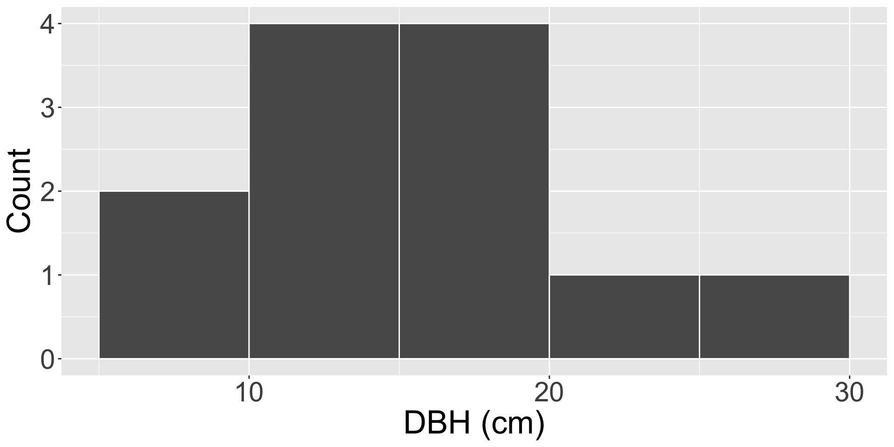
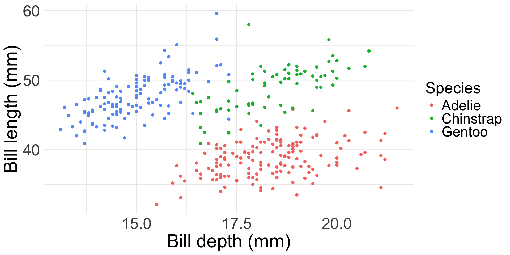
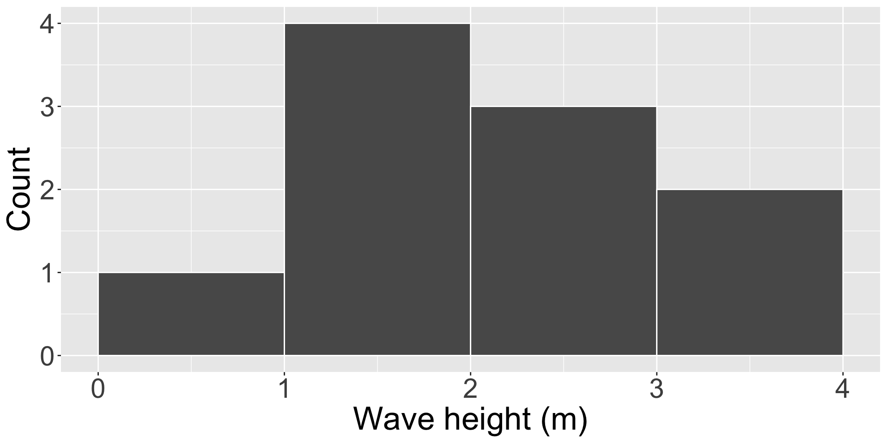
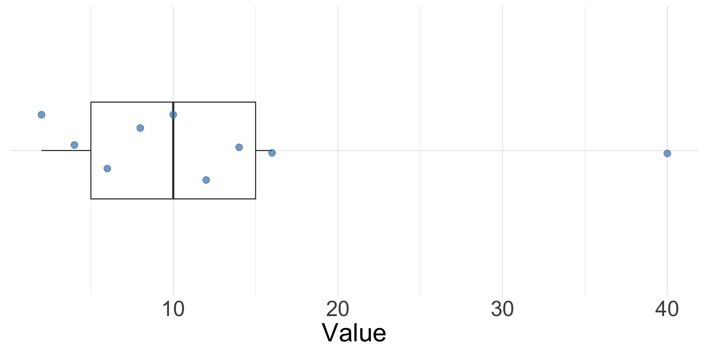
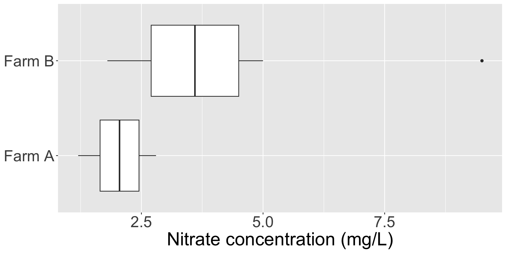

- Shape / patterns / clusters (data vizualization)
- Central tendency (mean / median)
- Spread & uncertainty (standard deviation / standard error / confidence interval)

EDS 212: Day 4, Lecture 1
Essential summary statistics and exploration
August 6th, 2025
Data types
Quantitative
Numeric information
Qualitative
Descriptions (usually words)
Data types
Quantitative
Numeric information
Qualitative
Descriptions (usually words)
Quantitative data: continuous & discrete
Art by Allison Horst
Nominal, ordinal, binary data:
Art by Allison Horst
Exercise
✏️ For each of the scenarios, identify which are the dependent and independent variables, what type of variable is each one of them (quant/qual/binary/nominal/ordinal/discerete/continuous).
A team studying nutrient runoff wants to know whether an agricultural watershed will exceed or stay below the regulatory nitrogen threshold in a given month. They collect data on 45 watersheds. For each watershed they have recorded whether the nitrogen threshold was exceeded or not exceeded, fertilizer application rate (kg N/ha), percent agricultural land cover, and average monthly rainfall.
We are interested in predicting the number of air quality complaints filed in 2025 in low-income urban neighborhoods. We collect data for 60 neighborhoods over 2025. For each neighborhood we record number of complaints filed in the year, median household income, distance to the nearest industrial facility, type of nearest industrial facility (chemical plant, manufacturing, power plant), percentage of residents who are renters, and local particulate matter (PM2.5) concentration.
Exercise A: Solution
A team studying nutrient runoff wants to know whether an agricultural watershed will exceed or stay below the regulatory nitrogen threshold in a given month. They collect data on 45 watersheds. For each watershed they have recorded whether the nitrogen threshold was exceeded or not exceeded, fertilizer application rate (kg N/ha), percent agricultural land cover, and average monthly rainfall.
✏️
Exercise A: Solution
A team studying nutrient runoff wants to know whether an agricultural watershed will exceed or stay below the regulatory nitrogen threshold in a given month. They collect data on 45 watersheds. For each watershed they have recorded whether the nitrogen threshold was exceeded or not exceeded, fertilizer application rate (kg N/ha), percent agricultural land cover, and average monthly rainfall.
Exercise B: Solution
We are interested in predicting the number of air quality complaints filed in 2025 in low-income urban neighborhoods. We collect data for 60 neighborhoods over 2025. For each neighborhood we record number of complaints filed in the year, median household income, distance to the nearest industrial facility, type of nearest industrial facility (chemical plant, manufacturing, power plant), percentage of residents who are renters, and local particulate matter (PM2.5) concentration.
✏️
Exercise B: Solution
We are interested in predicting the number of air quality complaints filed in 2025 in low-income urban neighborhoods. We collect data for 60 neighborhoods over 2025. For each neighborhood we record number of complaints filed in the year, median household income, distance to the nearest industrial facility, type of nearest industrial facility (chemical plant, manufacturing, power plant), percentage of residents who are renters, and local particulate matter (PM2.5) concentration.
How can we describe how data are distributed?
Our starting points:
Useful data visualizations
Basic ones:
Scatterplots
✏️
Scatterplots
A scatterplot shows the relationship between two numeric variables: each observation becomes a point, positioned using its value on the \(x\)-axis and its value on the \(y\)-axis. A third (categorical) variable can be mapped to color or shape.

Always, always, always look at your data. It is the only way to make a responsible decision about an appropriate type of analysis.
Histogram
✏️
Histogram
A histogram shows the distribution of a single numeric variable, by grouping values into bins and counting observations.
To construct one:
Histogram example
Twelve trees are measured in a forest plot, giving these diameter at breast height (DBH) values, in cm:
8, 9, 11, 12, 12, 14, 15, 15, 16, 19, 22, 27
✏️
Histogram example
Twelve trees are measured in a forest plot, giving these diameter at breast height (DBH) values, in cm:
8, 9, 11, 12, 12, 14, 15, 15, 16, 19, 22, 27
Using bins of width 5 cm:
| Bin (cm) | Count |
|---|---|
| [0, 5) | 0 |
| [5, 10) | 2 |
| [10, 15) | 4 |
| [15, 20) | 4 |
| [20, 25) | 1 |
| [25, 30) | 1 |

Exercise
✏️ Ten storm events produced these wave heights, in meters. Using bins of width 1 m (starting at 0), tally the counts and sketch the resulting histogram.
0.8, 1.1, 1.2, 1.5, 1.9, 2.0, 2.4, 2.6, 3.1, 3.6
Exercise: solution
✏️ Ten storm events produced these wave heights, in meters. Using bins of width 1 m (starting at 0), tally the counts and sketch the resulting histogram.
0.8, 1.1, 1.2, 1.5, 1.9, 2.0, 2.4, 2.6, 3.1, 3.6
| Bin (m) | Count |
|---|---|
| [0, 1) | 1 |
| [1, 2) | 4 |
| [2, 3) | 3 |
| [3, 4) | 2 |

Quartiles
Quartiles divide an ordered dataset into four equal parts.
One simple way to find them:
Quartiles
✏️ Find \(Q_1, Q_2,\) and \(Q_3\) for the values 4, 16, 8, 40, 2, 14, 6, 10, 12
Quartiles: solution
💡 Let’s see a solution!
Find \(Q_1, Q_2,\) and \(Q_3\) for the values 4, 16, 8, 40, 2, 14, 6, 10, 12
Ordered: 2, 4, 6, 8, 10, 12, 14, 16, 40
Boxplot
How it’s drawn:
Boxplot
Exercise: draw a box plot
How it’s drawn:
✏️ Using the quartiles you just found for 2, 4, 6, 8, 10, 12, 14, 16, 40 (\(Q_1=5\), \(Q_2=10\), \(Q_3=15\)), draw the box plot by hand.
Exercise: solution
💡 Let’s see a solution!

Exercise: interpreting boxplots
✏️ Two farms are monitored for nitrate concentration (mg/L) in their downstream runoff. Compare the two distributions below.

Exercise: solution
💡 Let’s discuss!
Let’s take a 5 minute break
image: Flaticon.com
Summarizing data numerically
Median
Middle value when all observations are arranged in order. If you have an even number of values, the median is calculated as the average of the middle two values. E.g. \(median\;of\;3, 7, 17 = 7\)
Pros:
Cons:
Mean
Average value of sample observations, calculated by summing all observation values and dividing by the number of observations. E.g. \(mean\;of\;3, 7, 17 = \frac{3+7+17}{3} = 9\)
Pros:
Cons:
Image: Sirkin, R. M. (2006). Measuring central tendency. In Statistics for the social sciences (pp. 83-126). SAGE Publications, Inc., https://www.doi.org/10.4135/9781412985987
Variance and standard deviation
Both are measures of data spread.
Variance
Reported in units of measurement squared
\[ S^2 = \frac{\sum_{i=1}^n(x_i - \bar{x})^2}{n-1}\]
Standard deviation
Reported in units of measurement
\[ s = \sqrt{\frac{\sum_{i=1}^n(x_i - \bar{x})^2}{n-1}}\]
Variance
✏️
Variance
Variance: Mean squared distance of observations from the mean
Where \(S^2\) is the sample variance, \(x_i\) is a sample observation value, \(\bar x\) is the sample mean, and \(n\) is the number of observations.
Exercise
Given these data: \(2, 4, 4, 6, 9\), calculate their variance. Remember:
\[ S^2 = \frac{\sum_{i=1}^n(x_i - \bar{x})^2}{n-1}\]
Calculate variance by hand (1/2)
Given these data: \(2, 4, 4, 6, 9\)
\[ mean = \frac{2+4+4+6+9}{5}=\frac{25}{5}=5\] 2. Subtract the mean from each data point and square the result:
\[(2-5)^2 = (-3)^2 = 9\] \[(4-5)^2 = (-1)^2 = 1\] \[(4-5)^2 = (-1)^2 = 1\]
\[(6-5)^2 = (1)^2 = 1\] \[(9-5)^2 = (4)^2 = 16\]
Calculate variance by hand (2/2)
Given these data: \(2, 4, 4, 6, 9\)
\[9+1+1+1+16 = 28\]
\[Variance = \frac{28}{5-1} = 7\]
Standard deviation
Also a measure of data spread, calculated by taking the square root of the variance.
\[ s = \sqrt{\frac{\sum_{i=1}^n(x_i - \bar{x})^2}{n-1}}\]
The best way to describe the distribution of the data is to present the data itself.
Beware summary statistics alone . . .
Meet the Datasaurus Dozen
Same summary statistics, different distributions
Source: Autodesk
From: Yanai, I., Lercher, M. A hypothesis is a liability. Genome Biol 21, 231 (2020). https://doi.org/10.1186/s13059-020-02133-w
Confidence interval
Confidence interval: a range of values (based on a sample) that, if we were to take multiple samples from the population and calculate the confidence interval from each, would contain the true population parameter X percent of the time.
Confidence interval
Confidence interval: a range of values (based on a sample) that, if we were to take multiple samples from the population and calculate the confidence interval from each, would contain the true population parameter X percent of the time.
What it’s NOT:
“There is a 95% chance that the true population parameter is inside the confidence interval.”
Confidence interval example
Mean shark length is 8.42 \(\pm\) 3.55 ft (mean \(\pm\) standard deviation), with a 95% confidence interval of [6.45, 10.39 ft] (n = 15).
What this DOES NOT mean: There is a 95% chance that the true population mean length is between 6.45 and 10.39 feet.
The true population mean is a fixed value and does not change – the CI either contains this true mean or it does not. There is no probability involved.
Confidence interval example
Mean shark length is 8.42 \(\pm\) 3.55 ft (mean \(\pm\) standard deviation), with a 95% confidence interval of [6.45, 10.39 ft] (n = 15).
What this DOES NOT mean: There is a 95% chance that the true population mean length is between 6.45 and 10.39 feet.
The true population mean is a fixed value and does not change – the CI either contains this true mean or it does not. There is no probability involved.
What this DOES mean: If we took a bunch of sets of samples from the population (all n = 15), then 95% of the time, the calculated mean would fall within this range.
This statement correctly describes the frequency with which we would expect CIs to capture the mean over many samples.
Communicating data summaries
What we covered today